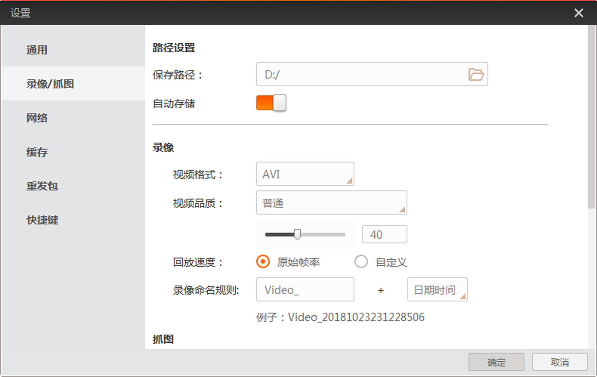
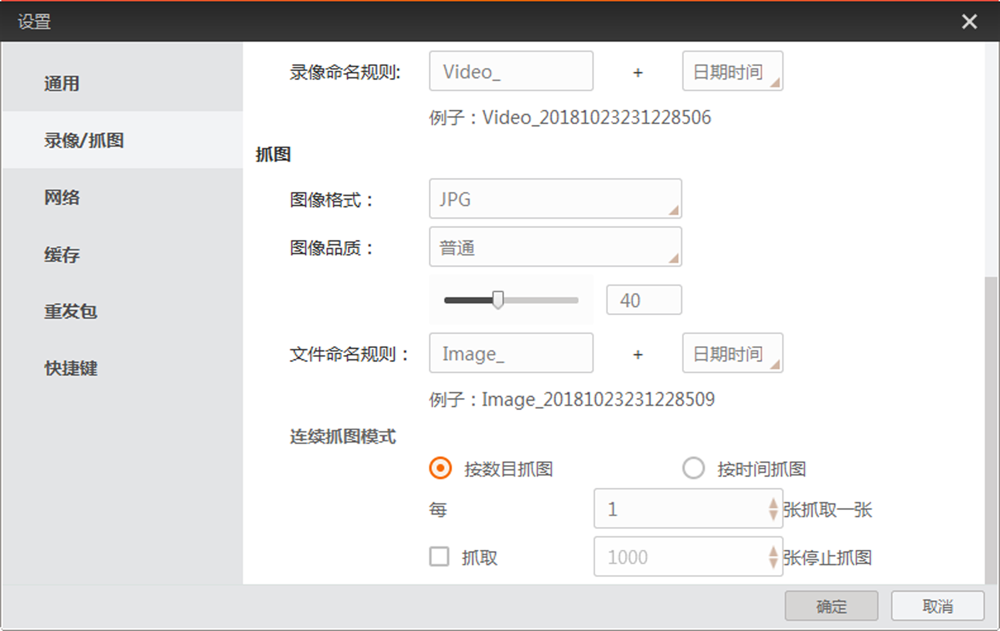

录像/抓图部分可根据需要对录像以及抓图进行设置，包括存储的相关设置、录像偏好设置、抓图偏好设置等。
路径设置
可通过路径设置功能设置录像或者图像是否自动保存，并设置保存路径，如下图所示。

图 1 路径设置
录像设置
图像预览过程中，若需要录像，可通过录像部分的参数设置视频格式、视频品质、视频的回放速度以及命名规则，如图 1所示。
- 视频格式
- 分为AVI和RAW两种格式。
- 视频品质
- AVI格式可设置视频品质，分为普通、较好以及最佳三种。1-40之间的品质分数属于普通级别，41-70之间的品质分数属于较好级别，71-100之间的品质分数属于最佳级别。软件默认的普通级别的品质分数为40，较好的品质分数为70，最佳的品质分数为100。若对品质分数没有过高的要求，建议下拉选择视频品质即可，不用调整品质分数的数值。
说明：
设置的AVI视频品质越高，对系统资源消耗越大。请根据实际情况设置视频品质。
- 回放速度
- 可设置为原始帧率，也可自定义设置。
- 录像命名规则
- 前缀可自定义设置，后缀可选择日期时间或者递增索引的方式进行设置。
抓图设置
图像预览过程中，若需要自动保存图像，可通过抓图部分的参数设置图像格式、图像品质、命名规则以及连续抓图模式，如下图所示。
- 图像格式
- 分为BMP、RAW、JPG、PNG以及TIFF五种格式。
- 图像品质
- JPG和PNG格式可设置图像品质，图像品质分为普通、较好以及最佳三种。1-40之间的品质分数属于普通级别，41-70之间的品质分数属于较好级别，71-100之间的品质分数属于最佳级别。默认的普通级别的品质分数为40，较好的品质分数为70，最佳的品质分数为100。若对品质分数没有过高的要求，建议下拉选择图像品质即可，不用调整品质分数的数值。
说明：
设置的图像品质越高，对系统资源消耗越大。请根据实际情况设置图像品质。
- 文件命名规则
- 文件命名规则的前缀可以自定义设置，后缀可以选择日期时间、递增索引或者时间戳的方式。
- 连续抓图模式
- 分为按数目抓图和按时间抓图两种。
- 按数目抓图
- 可以设置抓图的数量间隔以及抓图的数量。
- 按时间抓图
- 可以设置抓图的时间间隔以及抓图的时限。

图 2 抓图设置